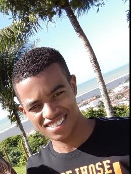

<!DOCTYPE html>
<html lang="pt-br"></html>
</head>
  <meta charset="UTF-8">
  <title>Meu Portifolio</title>
  <link rel="stylesheet" href="style.css">
  <head>  
  <body>
    <div>
    <h1 id="Nome">Renato Gonçalves de Abreu</h1>
    <DIV>
    
    <p class="description">Tenho 35 anos, sou <em class="estilo">brasileiro</em class=> natural de <em class="estilo">Novo Cruzeiro</em>.<br>Atualmente moro em <strong class="estilizar">Ibirité, MG</strong></p>
  </div>
</DIV>
    <p>
      <h3 id="Habilidades">Minhas habilidades</h3>
       <p><ul>
          <li class="tamanho1"><em><u>Sou uma pessoa que consigo manter a calma em momentos de pressão.</u></em></li>
          <li class="tamanho2">Gosto e tenho facilidade para trabalhar em equipe.</li>
          <li class="tamanho3">Não costumo desistir de desafios por mais dificeis que possam parecer.</li>
          <li class="tamanho4">Me considero uma pessoa esforçada, realizado e com muitas coisas que<br>ainda almejo conquistar.</li>
      </ul>
     <p>
       <br>
     </p><a href="Renato.jpeg">Foto</a>
     </p>
     <p>Como eu gosto bastante de esportes principalmente <em>futebol</em> e agora que estou<br>estudando na <a href="https://www.betrybe.com/" 
      target="_blank"> <strong> Trybe </strong><a>, não consigo assistir os programas de esportes, para saber<br>das novidades do mundo dos esportes,
         acompanho vejo o resumo das novidades<br>no <a href="https://www.youtube.com/channel/UCx0RRbF4EJOUQ28SurIU7Eg" target="_blank"> <strong>canal </strong><a> do <em>Jorge Nicola</em>, Pois ele traz diariamente um resumo das principais<br>noticias do mundo do <em>futebol</em>.
    </p>
    <br>
    <p><ul>
      <li><a href="#Nome">Nome</a></li>
      <li><a href="#Habilidades">Habilidades</a></li>
      <li><a href="#Foto">Foto</a></li>
    </ul></p>

      </body>
</html>